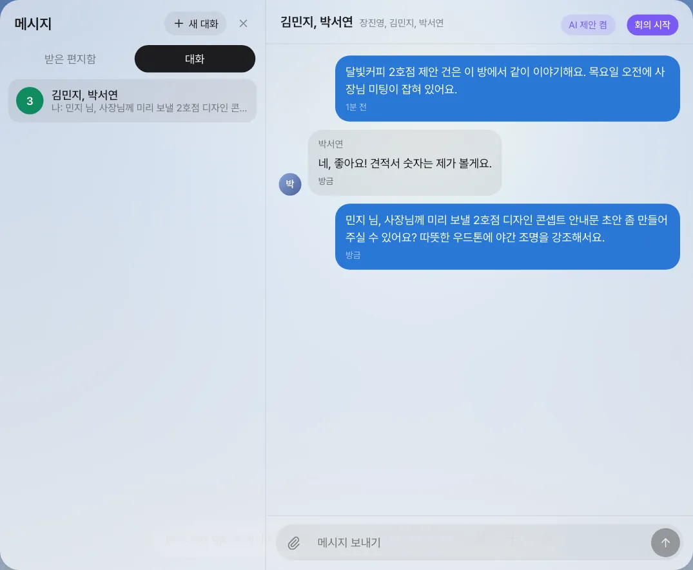
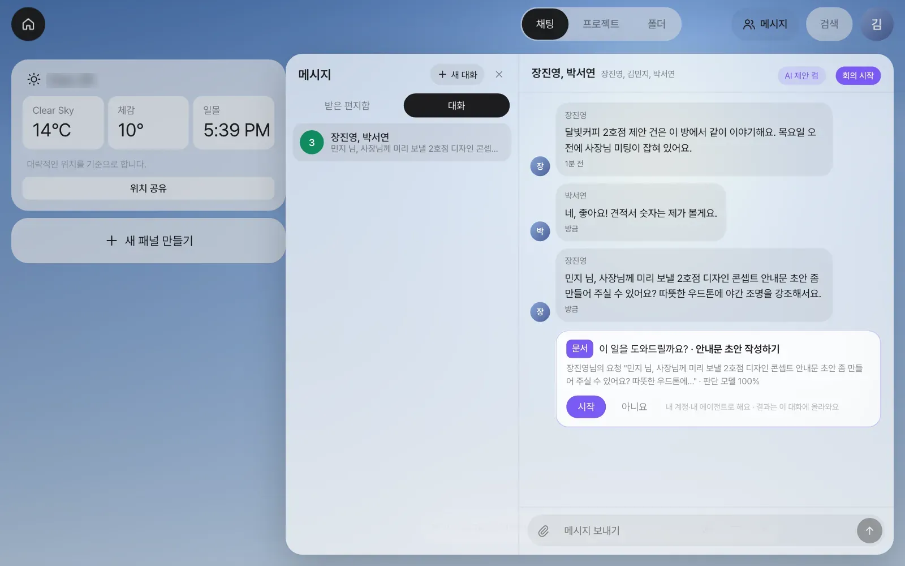
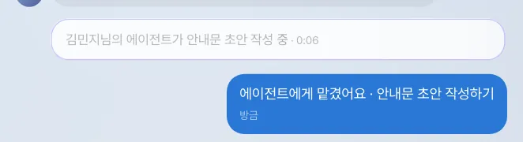
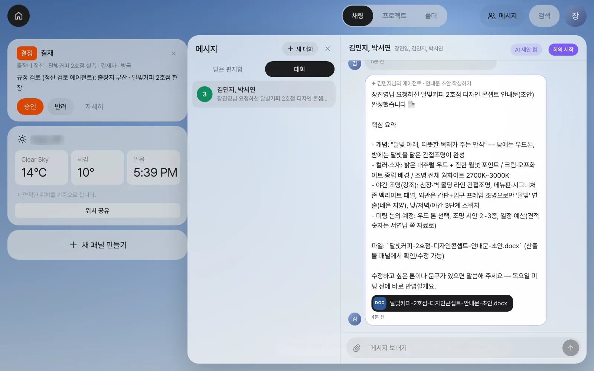
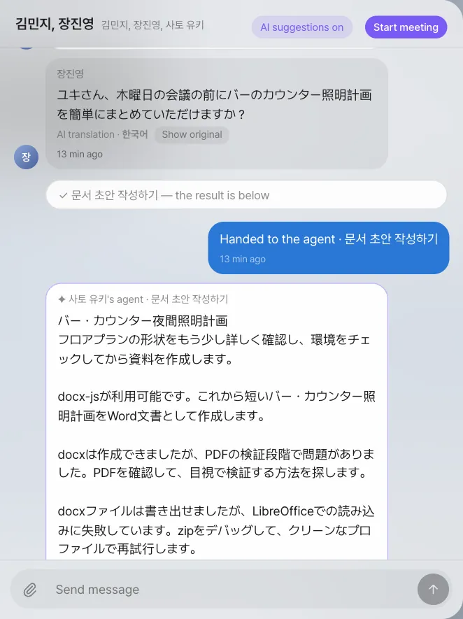
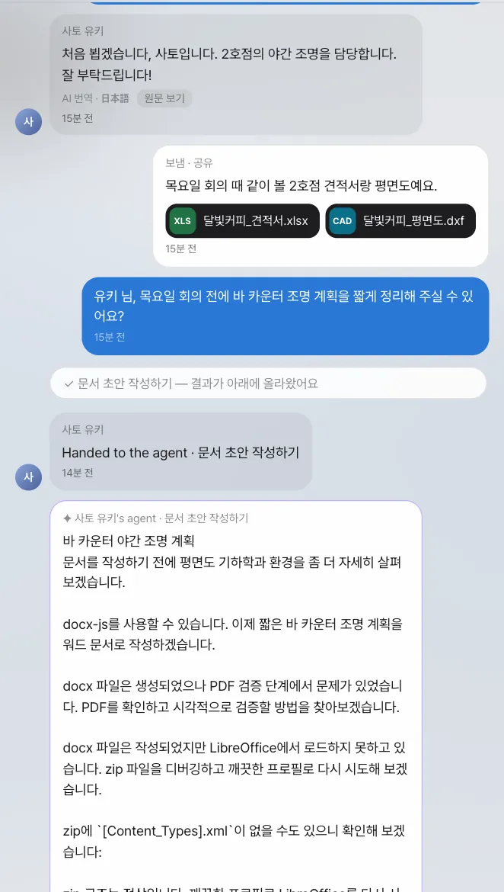

팀원과 1:1·그룹 대화방에서 이야기하다가 누군가 일을 부탁하면, 대화방 도우미가 부탁받은 사람에게만 “이 일을 도와드릴까요?” 카드를 띄웁니다. 「시작」을 누르면 그 사람의 에이전트가 일을 하고 결과를 대화방에 올립니다. 다른 언어로 쓰는 팀원과도 각자 자기 언어로 읽습니다.
왜 메신저가 앱 안에 있나#
14장까지 장진영 팀장은 산출물을 공유하고 @멘션으로 일을 넘겼습니다. 하지만 일은 늘 “이거 봐 주세요 → 고쳤어요 → 이건 어때요?” 같은 짧은 왕복으로 진행됩니다. 이 왕복을 바깥 메신저에서 하면 두 가지가 끊깁니다.
- 대화 속 부탁이 일로 이어지지 않습니다. 부탁받은 사람이 다시 자기 비서에게 설명해야 합니다.
- 대화방에서 오간 파일과 결정이 업무 기록에 남지 않습니다.
Lite의 메신저는 이 두 가지를 잇습니다. 대화방은 Process GPT의 채팅방을 그대로 쓰므로, Process GPT 화면에서 쓴 메시지도 같은 방에 보입니다.
| 기능 | 하는 일 |
|---|---|
| 1:1 대화 | 팀원 한 사람과의 대화. 같은 사람과는 늘 같은 방입니다. 공유·멘션도 이 방에 쌓입니다 |
| 그룹 대화 | 여러 사람을 고르면 그룹 대화가 됩니다(최대 8명) |
| 산출물 첨부 | 클립 버튼으로 내 산출물을 골라 보냅니다. 방 구성원만 각자의 사본으로 엽니다 |
| 안 읽은 수 | 위쪽 「메시지」 버튼과 대화 목록에 표시됩니다 |
| 대화방 도우미 | 대화 속 부탁을 알아차리고, 부탁받은 사람에게 제안 카드를 띄웁니다 |
| 회의 시작 | 대화방에서 바로 원격 회의를 엽니다(16장) |
| 번역 | 내 언어와 다른 언어로 쓴 메시지·에이전트 답·제안 카드를 내 주 언어로 보여 주고, 「원문 보기」로 원문을 봅니다 |
따라 하기 1 — 그룹 대화방 만들기#
장진영 팀장 계정에서 합니다.
- 오른쪽 위 「메시지」를 누릅니다. 왼쪽에 「받은 편지함」과 「대화」 탭이 있는 창이 열립니다.
- 「+ 새 대화」를 누르고 대화할 팀원을 고릅니다. 김민지(디자이너)와 박서연(재무 담당)을 고르세요. 둘 이상 고르면 그룹 대화가 됩니다. 자주 주고받은 팀원이 위에 옵니다.
- 「대화 시작」을 누르고 첫 메시지를 보냅니다.
달빛커피 2호점 제안 건은 이 방에서 같이 이야기해요. 목요일 오전에 사장님 미팅이 잡혀 있어요.
박서연 계정에서 같은 방을 열고 답해 봅니다(네, 좋아요! 견적서 숫자는 제가 볼게요.). 실시간으로 장진영 팀장 화면에 나타나고, 안 읽은 수가 올라갑니다.
방 이름
그룹 대화방에는 따로 이름을 붙이지 않습니다. 목록에는 나를 뺀 구성원 이름이 보입니다. 장진영 팀장 화면에서는 “김민지, 박서연”, 김민지 화면에서는 “장진영, 박서연”입니다.
따라 하기 2 — 대화 속 부탁이 일이 되기까지#
이제 장진영 팀장이 김민지에게 일을 부탁합니다. 비서에게 시키는 말이 아니라, 동료에게 하는 평소 말투 그대로 씁니다.
민지 님, 사장님께 미리 보낼 2호점 디자인 콘셉트 안내문 초안 좀 만들어 주실 수 있어요? 따뜻한 우드톤에 야간 조명을 강조해서요.

김민지 계정에서 같은 방을 엽니다. 부탁 바로 아래에 제안 카드가 떠 있습니다.

확인할 것: 카드는 김민지 화면에만 있습니다. 부탁한 장진영 팀장과 이름이 불리지 않은 박서연 화면에는 없습니다.
도우미는 어떻게 알아차리나#
메시지마다 일하는 큰 AI 모델을 부르면 느리고 비쌉니다. 그래서 도우미는 세 단계로 거릅니다.
| 단계 | 하는 일 | 예 |
|---|---|---|
| ① 규칙 | 짧은 말, 이모지, 인사·잡담, 부탁 꼴이 아닌 말은 바로 건너뜁니다 | “ㅋㅋ 좋아요”, “점심 뭐 먹어요?” |
| ② 판단 모델 | 작은 판단 전용 모델이 “일을 부탁하는 말인가?”와 “어떤 일인가?”(문서·표·요약·일정·답장·프로세스…)를 고릅니다. 실습에서는 메시지 하나를 판단하는 데 1초 안팎 걸렸습니다 | “안내문 초안 만들어 주실 수 있어요?” → 문서 작성 |
| ③ 받을 사람 | 말 속에 이름이 불린 사람에게만 카드를 띄웁니다. 아무도 부르지 않았으면 보낸 사람을 뺀 모두에게 띄웁니다 | “민지 님” → 김민지 |
등록된 프로세스와 맞는 부탁(“출장비 정산 신청해 주세요” 등)이면 카드가 「○○ 시작하기」로 바뀝니다. 알아차리는 데에는 큰 모델을 쓰지 않습니다. 큰 모델은 사람이 「시작」을 누른 뒤에만 일합니다.
따라 하기 3 — 「시작」을 누르면#
김민지가 카드의 「시작」을 누릅니다. 대화방에 “에이전트에게 맡겼어요 · 안내문 초안 작성하기”가 남고, 카드는 진행 표시로 바뀝니다.

일은 누른 사람의 계정과 에이전트로 합니다. 김민지의 에이전트가 대화방의 최근 대화를 함께 받아 문서를 만들고, 결과를 대화방에 올립니다. 실습에서는 약 2분이 걸렸습니다.

확인할 것
- 대화방에 「✦ 김민지님의 에이전트 · 안내문 초안 작성하기」 메시지와
.docx파일 칩이 있습니다. - 장진영·박서연이 파일 칩을 누르면 자기 사본이 열립니다. 고쳐도 김민지의 원본은 그대로입니다.
문장은 실행할 때마다 다릅니다. 콘셉트 문구가 사진과 달라도 파일 칩이 생겼다면 성공입니다.
따라 하기 4 — 다른 언어로 쓰는 팀원#
팀이 늘 한 언어로만 일하지는 않습니다. 2호점 야간 조명은 도쿄 협력 스튜디오의 조명 디자이너 사토 유키와 함께 합니다. 사토 유키는 일본어로 쓰고 말합니다. (이 튜토리얼에 나오는 사람과 회사는 예시입니다.)
사람마다 주 언어가 있습니다. 메시지를 읽고 회의에서 말하는 언어입니다. 「설정 › 계정 › 내 정보 › 주 언어 / Main language」에서 정합니다(화면 언어인 「언어 / Language」와 따로입니다). 화면은 한국어와 영어뿐이라, 주 언어가 日本語인 사토 유키는 영어 화면으로 일합니다.
- 장진영 팀장 계정에서 「+ 새 대화」를 누르고 김민지와 사토 유키를 골라 「대화 시작」을 누릅니다. 인사를 보냅니다(
유키 님, 달빛커피 2호점 조명 건은 이 방에서 같이 이야기해요. 디자인은 민지 님이 맡고 있어요.). - 사토 유키가 자기 계정에서 일본어로 답합니다.
はじめまして、佐藤です。2号店の夜の照明を担当します。よろしくお願いします！
장진영 팀장 화면에는 이 메시지가 한국어로 보이고, 아래에 「AI 번역 · 日本語」와 「원문 보기」가 붙습니다. 「원문 보기」를 누르면 일본어 원문이, 「번역 보기」를 누르면 다시 한국어가 보입니다.
- 클립 버튼으로 2호점 견적서와 평면도를 올리고(
목요일 회의 때 같이 볼 2호점 견적서랑 평면도예요.), 한국어로 부탁합니다.
유키 님, 목요일 회의 전에 바 카운터 조명 계획을 짧게 정리해 주실 수 있어요?
- 사토 유키 화면에서는 장진영의 메시지가 일본어로 보이고, 부탁 아래 제안 카드(제목과 인용된 부탁)도 일본어로 보입니다. 사토 유키가 「Start」를 누르면 사토 유키의 에이전트가 방의 대화와 파일을 읽고 조명 계획을 올립니다.

에이전트는 사토 유키의 화면 언어인 영어로 씁니다. 그래서 장진영 팀장 화면에서는 이 답도 한국어로 번역되어 「AI 번역 · English」와 함께 보입니다.

| 무엇을 | 어떻게 보이나 |
|---|---|
| 다른 언어로 쓴 팀원의 메시지 | 내 주 언어로. 「AI 번역 · 원문 언어」와 「원문 보기 / 번역 보기」 |
| 에이전트의 답, 도우미의 행 | 열어 볼 때 같은 방식으로 번역 |
| 제안 카드 | 제목과 이유를 내 주 언어로 |
| 내 메시지, 이미 내 언어인 메시지 | 쓴 그대로(번역하지 않음) |
| 회의·자료 카드 | 화면이 자기 언어로 그림 |
확인할 것
- 장진영 팀장 화면에서 사토 유키의 메시지에 「AI 번역 · 日本語」가 붙어 있습니다.
- 사토 유키 화면에서 장진영의 메시지에 「AI translation · 한국어」가 붙어 있습니다.
메시지마다, 읽는 언어마다 한 번만 서버의 OpenAI 키로 작고 빠른 모델이 번역하고 저장해 둡니다. 방을 다시 열어도 모델을 다시 부르지 않습니다. 번역은 그 방 구성원에게만 합니다.
번역의 한계
제안 카드 다루기#
| 하고 싶은 것 | 방법 |
|---|---|
| 이번 제안만 무시 | 「아니요」 — 내 화면에서만 사라집니다 |
| 이 방에서는 제안을 받지 않기 | 방 머리줄의 「AI 제안 켬」을 눌러 「AI 제안 끔」으로 |
| 내가 한 부탁을 내가 처리 | 부탁한 사람에게는 카드가 뜨지 않습니다. 내 비서 채팅에 직접 요청하세요 |
제안이 안 뜰 때
- 부탁 꼴로 썼는지 보세요. “안내문 초안이 필요해요”보다 “안내문 초안 만들어 주실 수 있어요?”가 잘 잡힙니다.
- 무슨 일인지 낱말이 있어야 합니다(견적·문서·요약·일정·회신·프로세스 등).
- 판단 모델이 연결되지 않은 설치에서는 규칙만 돌고 제안은 뜨지 않습니다. 연결은 운영 담당자가 합니다(1장).
1:1 대화와 받은 편지함의 관계#
14장에서 박서연에게 견적서를 공유했다면, 「대화」 탭에 박서연과의 1:1 방이 이미 있습니다. 공유와 @멘션은 받은 편지함에도 뜨지만, 실제로는 두 사람의 1:1 방에 메시지로 쌓입니다. 그래서 “견적서 봐 주세요 → 확인했어요, 부가세만 고쳐 주세요”가 한 방에 이어집니다.
다음 장에서는 이 그룹 대화방에서 바로 원격 회의를 엽니다(16장). 회의 중의 부탁도 지금과 같은 제안 카드로 이어지고, 회의 내용은 이 방에 저절로 남습니다.
확인 문제
- 그룹 대화방에서 박서연 계정으로
장진영 팀장님, 목요일 미팅 전에 지금까지 나온 이야기를 요약해 주실 수 있을까요?를 보내 보세요. 제안 카드는 누구 화면에 뜨나요? 카드의 일 종류는 무엇인가요? - 같은 방에서
오늘 점심 뭐 먹을까요?를 보내면 어떻게 되나요? 왜 그런가요? - 김민지 계정에서 방의 「AI 제안 켬」을 눌러 끈 뒤, 장진영 계정으로 김민지에게 부탁을 다시 보내 보세요. 무엇이 달라지나요?
- 사토 유키가 있는 방에서 장진영 팀장이
고마워요, 유키 님!이라고 보냅니다. 사토 유키와 김민지 화면에는 각각 어떻게 보이나요?
답
- 장진영 팀장 화면에만 뜹니다(이름이 불린 사람). 일 종류는 「요약 · 이 대화 요약하기」입니다. 판단 모델이 고르므로 드물게 다른 종류가 나올 수 있습니다. 부탁에 등록된 프로세스 이름과 겹치는 낱말(예: 견적)이 있으면 「○○ 시작하기」 카드가 되기도 합니다.
- 아무 카드도 뜨지 않습니다. 잡담 낱말(점심)이 있고 일을 가리키는 낱말이 없어 ① 규칙 단계에서 걸러집니다. 판단 모델도 부르지 않습니다.
- 방 단위 설정이라, 그 방에서는 누구에게도 제안 카드가 뜨지 않습니다. 메시지는 그대로 오갑니다. 다시 켜면 그다음 메시지부터 제안합니다.
- 사토 유키 화면에는 일본어 번역과 「AI translation · 한국어」, 「Show original」이 보입니다. 김민지는 주 언어가 한국어이므로 쓴 그대로 봅니다. 장진영 팀장 자신의 화면에서도 번역하지 않습니다.